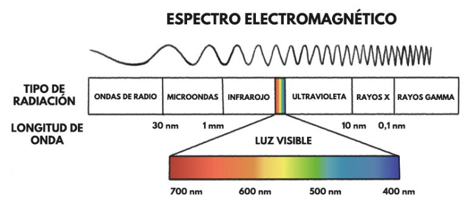

Imágenes térmicas en cámaras de RPAS
RPAS
Un RPAS (Remotely Piloted Aircraft System, por sus siglas en inglés) hace referencia al concepto de una aeronave que vuela sin tripulación y que es controlada remotamente. Un vehículo aéreo no tripulado (VANT), es propiamente el vehiculo de vuelo, comúnmente conocido con el sinónimo de drone (PITRA-LanammeUCR, 2017).
Existen RPAS con caracterisiticas particulares que permiten soportar sensores especificos, por ejemplo, los sensores térmicos integrados, que pueden medir información termográfica de objetos. Los RPAS térmicos, cuentan con un sensor denominado microbolómetro, este equipo absorbe energía infrarroja y crea un termograma basado en las mediciones. En síntesis, las cámaras térmicas constan de un objetivo especializado que permite el paso de las frecuencias infrarrojas. Por tal motivo, la cámara incluye un sensor térmico y un procesador de imágenes que se encuentran almacenados en una funda protectora. Mientras el VANT vuela, el sensor térmico de la cámara detecta longitudes de onda infrarrojas y las convierte en señales electrónicas. Después de recibir las señales, el procesador de imágenes crea el termograma o imagen termográfica, que se compone de un mapa de color que muestra diferentes valores de temperatura (DJI Enterprise, 2021).
Imagenes térmicas
Las cámaras térmicas miden fundamentalmente la temperatura de la superficie de un objeto y están diseñadas para detectar cambios sutiles de temperatura. Existen objetos que reflejan la radiación térmica en mayor grado que otros, las superficies no reflectantes, como el hormigón, la madera e incluso los seres humanos, tienen un alto grado de emisividad y por ello se pueden medir con mayor precisión mediante imágenes térmicas (DJI Enterprise, 2021).
Los seres humanos pueden sentir el calor, pero no pueden verlo, porque el calor ocurre en la longitud de onda infrarroja del espectro electromagnético, ver Figura No. 1. Las cámaras térmicas, por otro lado, capturan energía infrarroja y generan imágenes interpretables que se ajustan a la visión humana. Es importante tener en cuenta que, no todos los objetos emiten una firma de calor precisa. El grado en el que un objeto absorbe o refleja el calor se llama emisividad y varía mucho entre los objetos. Además, los objetos con alta emisividad, como la madera, se pueden detectar con facilidad con un dispositivo de imágenes térmicas, mientras que los de baja emisividad, como las baldosas, no se pueden detectar con facilidad con una cámara térmica (DJI Enterprise, 2021).
Figura No. 1 Espectro electromagnético
Fuente:La Mona Lista, 2020
La radiación infrarroja es invisible al ojo humano y su rango en el espectro electromagnético se sitúa entre la luz visible y la radiación de microondas. Dentro de este amplio margen, las cámaras térmicas trabajan en un rango conocido como infrarrojo térmico, equivale aproximadamente entre los -20 ºC y 350 ºC. El microbolómetro al recibir la radiación infrarroja se calienta y cambia su resistencia eléctrica. Este cambio de resistencia se mide y se equipara a una determinada temperatura, asignado un color para cada temperatura y formando la imagen coloreada (termograma) La no uniformidad de temperaturas suelen indicar alguna falla o punto crítico, siendo este el principal objeto de estudio (Promax, 2019).
La radiación electromagnética emitida por la superficie terrestre en la región del infrarrojo térmico, típicamente se encuentra entre los 8 y 14μm. En ese intervalo se produce el 80 % de la emisividad de la superficie terrestre (Martínez-Barbáchano, 2019).
La estimación de la temperatura superficial está condicionada, principalmente, por el contenido de vapor de agua de la atmósfera (especialmente sensible en la zona intertropical) y la emisividad de la superficie estudiada. Por todo ello, una correcta estimación de la temperatura superficial implica necesariamente la consideración y corrección de estos factores (Martínez-Barbáchano, 2019).
La radiación emitida por una superficie a una determinada longitud de onda, dentro del rango infrarrojo térmico, es función no sólo de su temperatura, sino que depende también de su emisividad. Es por ello, un parámetro crítico para el estudio del balance radiativo terrestre (Martínez-Barbáchano, 2019).